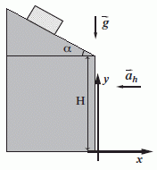

NO ME SALEN
PROBLEMAS RESUELTOS DE FÍSICA DEL CBC
(Movimiento uniforme)
|
|

|
| |
FIS c5.06 - Un cuerpo baja deslizando por un plano
inclinado que forma un ángulo α = 30º con la horizontal.
Al llegar al final del mismo, el cuerpo
alcanza una velocidad de módulo 10 m/s.
A partir de ese momento, el cuerpo cae, pero
debido a la presencia de viento, adquiere también
una aceleración horizontal ah. (Ver figura).
Datos: H = 200 m; |g| = 10 m/s²; |ah| = 0,5 m/s².
a) Calcular el alcance.
b) Calcular la velocidad
al llegar al piso. |
 |
|
Pero qué ejercicio más ventoso. No le hagamos asco. Vamos al esquema: |
|
|
 |
Bueno, no te olvides de que lo más importante en la cinemática es confeccionar correctamente el esquema. Una pequeña falla en el esquema significa FRACASO, lisa y llanamente.
Mirá bien los valores que puse en el globito rosa que refleja las magnitudes cinemáticas del inicio de la caída, que llamé 0. Los valores de las velocidades (y sus signos que dependen del SR) surgen de esto:
v0x = 10 m/s cos 30º
v0y = 10 m/s sen 30º
|
|
|
|
Para armar las ecuaciones le prestamos atención al globito rosa (no te olvides que el movimiento horizontal, esta vez, también es variado).
x = 8,66 m/s t – 0,25 m/s² t²
y = 200 m – 5 m/s t – 5 m/s² t²
vx = 8,66 m/s – 0,5 m/s² t
vy = 5 m/s – 10 m/s² t
ax = – 0,5 m/s²
ax = – 10 m/s²
Las dos últimas no las vamos a usar, pero a las 4 primeras le pedimos que hablen de punto 1, la llegada al piso.
x1 = 8,66 m/s t1 – 0,25 m/s² t1²
0 m = 200 m – 5 m/s t1 – 5 m/s² t1²
vx1 = 8,66 m/s – 0,5 m/s² t1
vy1 = 5 m/s – 10 m/s² t1
Y listo, ¿viste qué fácil? El resto es álgebra. Toda la ciencia estuvo en el esquema. De la de alturas calculás t1 , lo que te da lo metés en las otras 3...
t1 = 5,84 s
Entonces, el alcance, x1...
x1 = 8,66 m/s 5,84 s – 0,25 m/s² (5,84 s)²
|
|
|
|
|
|
Las velocidades nos dan:
vx1 = 8,66 m/s – 0,5 m/s² 5,84 s = 5,74 m/s
vy1 = 5 m/s – 10 m/s² 5,84 s = – 53,4 m/s
Por lo tanto la velocidad al llegar al piso: |
|
|
| |
v1 = 5,74 m/s î – 53,4 m/s ĵ |
|
|
|
|
| |
|
|
Desafío: ¿Conocés movimientos de este estilo? |
|
 |
| |
|
| Algunos derechos reservados.
Se prohibe estrictamente leer este ejercicio resuelto por encima: hay que leerlo despacio y con atención. Las penalizaciones a esta infracción son severísimas. Se permite su reproducción citando la fuente. Última actualización mar-16. Buenos Aires, Argentina. |
|
|
| |
|